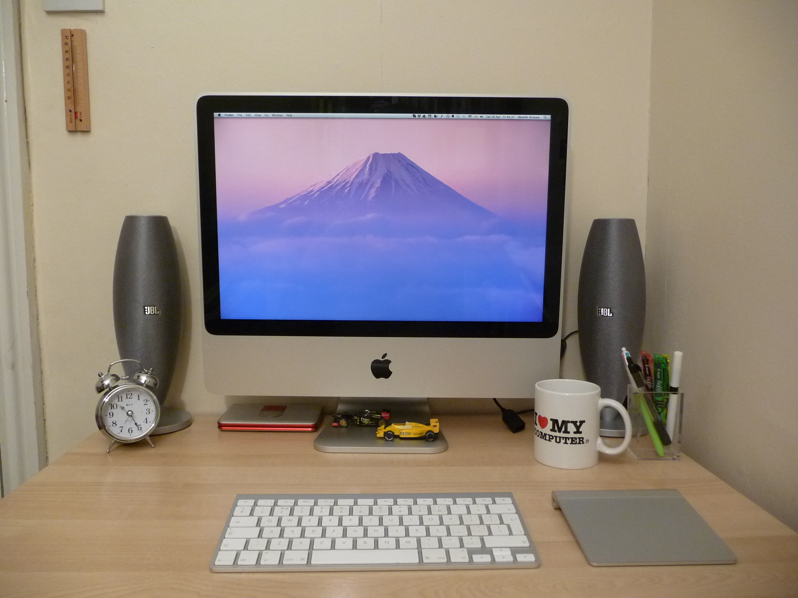

7 Indispensable Items
Things that I cannot live without (or I can)
Created by Shoichi Aizawa
1. MacBook Pro

iMac 20" Early 2008
2. Terminal emulator

iTerm2
3. dotfiles

dotifles
let mapleader = "," " Use ',' for the mapleader (default '\')
let maplocalleader = "\\" " Use '\' for the mappings local to buffer
set t_Co=256 " Tell the term has 256 colors set background=dark
set background=dark
colorscheme solarized
syntax on " TODO: Use syntax highlighting
set encoding=utf-8 "enc: Set the character encoding used inside Vim
set fileencoding=utf-8 "fenc: Set the character encoding for the file of
" this buffer
set termencoding=utf-8 "tenc: Encoding used for the terminal
set spell " Enable spell checking by default
set spelllang=en "spl: Set spell check language (default "en")
set notimeout
set ttimeout
set ttimeoutlen=10 "ttm: The time for key code delay (default -1)
set mouse=a " Enable mouse scrolling
set mousehide "mh: Hide mouse cursor when typing (default on)
set clipboard=unnamed " Allow copy text to clipboard with * register
set clipboard+=unnamedplus "TODO Allow copy text to clipboard with + register
set ttyfast "tf: Faster terminal connection
set hidden "hid: Hide buffers when not displayed instead of
" being closed
set history=10000 "hi: Keep 10000 lines of command line history
set autoread "ar: When a file has been detected to have been
" changed outside of Vim and it has not been
" changed inside of Vim, automatically read it
" again
set confirm "conf: Using a dialogue, ask the user whether
" to confirm the command,
" such as :q, :qa and :w
set shortmess=atI "shm: Shorten command-line text and other info tokens
3. dotfiles

4. Cloud computing services

Cloud storage services

5. Stationery

BIC 4 colour pen

MUJI notebooks

6. Bag

C6 Life

7. Trainers

Nike Kashi

Runners-up
Starbucks card